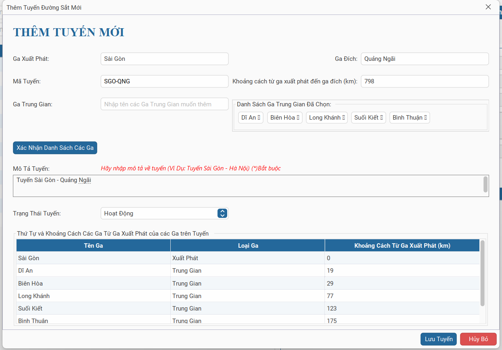

Đăng nhập hệ thống với quyền Quản trị/Quản lý. Điều hướng đến menu Quản lý Tuyến và nhấn nút + Thêm Tuyến Mới.
Bước 2: Thiết lập Thông tin Cơ bản
1. Chọn Ga xuất phát và Ga kết thúc từ danh sách ga có sẵn.
2. Nhập Tên tuyến gợi nhớ (ví dụ: Tuyến Thống Nhất 1).
3. Hệ thống sẽ tự động gợi ý Mã Tuyến theo quy định.
Bước 3: Lập danh sách Ga Trung gian
Nhấn nút Thêm Ga để chèn các ga vào giữa hành trình:
Chọn tên ga trung gian.
Nhập Khoảng cách (Km) tính từ ga trước đó đến ga này.
Hệ thống sẽ tự động đánh số thứ tự 1, 2, 3...
Bước 4: Kiểm tra và Lưu
Sử dụng chức năng Xem trước sơ đồ để kiểm tra lại thứ tự các ga. Nếu đã chính xác, nhấn Xác nhận Lưu.
Hệ thống sẽ ghi nhận dữ liệu và sẵn sàng để lập lịch cho các Chuyến tàu trên tuyến này.

Hình 1: Minh họa bảng nhập liệu danh sách ga trung gian trên tuyến